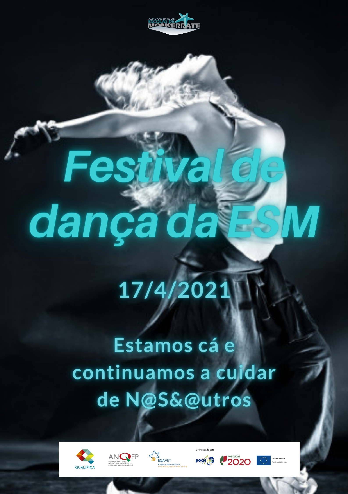

Gostaríamos de anunciar que, no dia 17 de abril de 2021, acontecerá um festival de dança na Escola Secundária de Monserrate. Atuarão os Viana Dancers, Socos e Murros, Irmandade dos Patos, Os Arriba Espanha, Arraial Minhoto e os Front Street Boys que apresentarão as melhores danças do país. Não vais querer perder!
